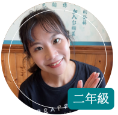
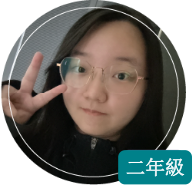
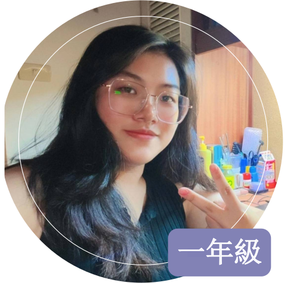
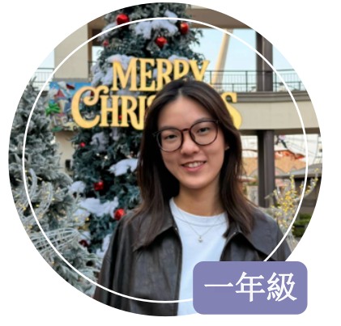
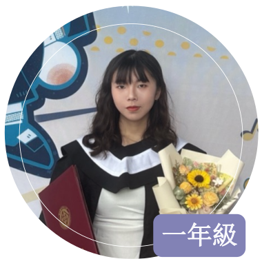

LAB MEMBERS
實驗室成員
第一校區人才集散地
MEMBERS OVERVIEW
成員總覽
指導教授、共同主持人、碩博士生、大學部專題生與歷屆畢業生名單。
18Members
16Students
1Co-PI
115Academic Year
PRINCIPAL INVESTIGATOR
指導教授
Professor Profile蘇國瑋 特聘教授
Chris K.W. Su, Ph.D.
Email：kwsu@nkust.edu.tw
校內分機：07-6011000 分機 34124
查看教授詳細資訊（論文發表、研究計畫、產學合作等）→
RESEARCH INTERESTS 研究專長
- 人機互動設計Human-Computer Interaction
- 醫療與人因工程Healthcare and Ergonomics
- 社群商務Social Commerce
- 使用者經驗研究User Experience Research
- 大數據應用Big Data Applications
- AI 與人機協同合作AI & Human-Robot Collaboration
博士班
林佩怡
博士班擅長領域
- 溝通協調
- 智慧醫療
王豪浥
博士班擅長領域
- 電子商務
- 使用性評估與測試

李蕙萍
博士班擅長領域
- OSH
- Ergonomics Prevention of MSDs
碩士班
陳仕航
碩士班 一般組擅長領域
- XR Development
- Java Development
陳岳群
碩士班 一般組擅長領域
- 找尋自我中...
- 不知要找多久...

楊子誼
碩士班 一般組擅長領域
- Image Recognition
- Python

吳瑋庭
碩士班 一般組擅長領域
- Web Design
- Python

郭俐辰
碩士班 一般組擅長領域
- Service Design
- Interpersonal Communication
朱育萱
碩士班 一般組擅長領域
- Web Design
- Python

楊詠涵
碩士班 一般組擅長領域
- UI/UX
- Python
實驗室專題生
邱靖芸
大學部 專題生擅長領域
- 人工智慧應用
- 文書處理
徐士宸
大學部 專題生擅長領域
- 人際溝通
- Java 程式設計
廖子緣
大學部 專題生擅長領域
- Python 開發
- 人工智慧應用
陳宥蓁
大學部 專題生擅長領域
- Arduino
- 溝通協調
裴玉萍
大學部 專題生擅長領域
- Java
- 文書處理
許筑翕
大學部 專題生擅長領域
- Java 程式設計
- 文件編寫
畢業生
歷屆畢業成員的擅長領域紀錄，依畢業學年度分列。
115 學年度畢業生
115 學年度白宜婷碩士班 一般組｜Web Design ・ Java Development
115 學年度林曉範碩士班 一般組｜Project Management ・ MR Development
115 學年度洪崇文碩士班 一般組｜Data Analysis ・ UIUX Design
115 學年度徐敏容碩士班 一般組｜App Development ・ Tiger Rotten
115 學年度簡言蓁碩士班 一般組｜Python ・ Negotiating Skill
115 學年度許菫雯大學部 技優生｜Making Presentation ・ Word Processing
115 學年度黃楷烜大學部 專提生｜Java ・ Front-end Development
115 學年度徐毓廷大學部 專提生｜R Programming ・ Word Processing
115 學年度張鈞瑋大學部 專提生｜Python Development ・ UI Design
114 學年度畢業生
114 學年度劉憶寬碩士班 一般組｜找尋自我中... ・ 不知要找多久...
114 學年度黃瑀淮大學部 專題生｜找尋自我中... ・ 還在尋找中～～
114 學年度劉芸廷大學部 專題生｜網頁設計 ・ 文書處理
114 學年度邱楊智大學部 專題生｜文書處理 ・ 談判技巧
114 學年度龔倢大學部 專題生｜網頁設計 ・ 混合實境開發
114 學年度陳盈臻大學部 專題生｜Java 全端開發 ・ Python 開發
114 學年度林秭礽大學部 專題生｜網頁全端開發 ・ 混合實境開發
114 學年度陳欣妤大學部 專題生｜文書處理 ・ 談判技巧
114 學年度王瑋翎大學部 專題生｜UIUX 設計 ・ 數據分析
113 學年度畢業生
113 學年度何承翰碩士班 一般組｜程式設計 ・ 後端網頁設計
113 學年度劉宜靜碩士班 一般組｜文案撰寫 ・ 平面設計
113 學年度陳靖慈碩士班 一般組｜協調溝通 ・ 介面設計
113 學年度陳冠穎碩士班 一般組｜前後端網站 ・ APP 開發
113 學年度吳佩瑜大學部 專題生｜網頁設計 ・ 文書處理
113 學年度林兪丞大學部 專題生｜Python ・ 文書處理
113 學年度王貿新大學部 專題生｜Unity ・ 遊戲設計
113 學年度黃梃样大學部 專題生｜撰寫文案 ・ 溝通協調
113 學年度林連恩大學部 專題生｜文書處理 ・ 程式設計
112 學年度畢業生
112 學年度邱伯智博士班｜學術期刊 ・ 研究企劃書撰寫
112 學年度黃心瑜碩士班 一般組｜視覺設計 ・ 電腦繪圖
112 學年度賴柏嘉碩士班 一般組｜Python ・ 電子商務
112 學年度林悅如大學部 專題生｜企劃撰寫 ・ 溝通協調
112 學年度劉昌儒大學部 專題生｜創業企劃 ・ 專案管理
112 學年度林亞芳大學部 專題生｜電腦繪圖 ・ 美術設計
112 學年度高翊馨大學部 專題生｜網頁設計 ・ 美工設計
112 學年度張珮君大學部 專題生｜程式撰寫 ・ 美工文書
112 學年度許琇喬大學部 專題生｜企劃構想 ・ 統籌協調
111 學年度畢業生
111 學年度胥佩君碩士班 一般組｜網頁設計 ・ 多媒體網頁設計
111 學年度林婉瑧碩士班 電子商務組｜網路行銷 ・ 多媒體網頁設計
111 學年度曾建智碩士班 一般組｜程式設計 ・ 前後端網頁設計
111 學年度阮琮文碩士班 一般組｜系統介面設計 ・ 網頁設計
111 學年度蕭宗朋碩士班 一般組｜演算法設計 ・ 深度學習
111 學年度蔣長珅大學部 技優生｜Python 程式設計 ・ 金融相關程式設計
111 學年度黃琦雯大學部 專題生｜軟體開發 ・ 程式設計
111 學年度溫玉婕大學部 專題生｜角色設計＆企劃構想 ・ 夢想當一條鹹魚
111 學年度蔡佳蓁大學部 專題生｜角色設計＆模型製作 ・ 夢想當一顆馬鈴薯
111 學年度黃湘雲大學部 專題生｜介面設計 ・ 美工設計